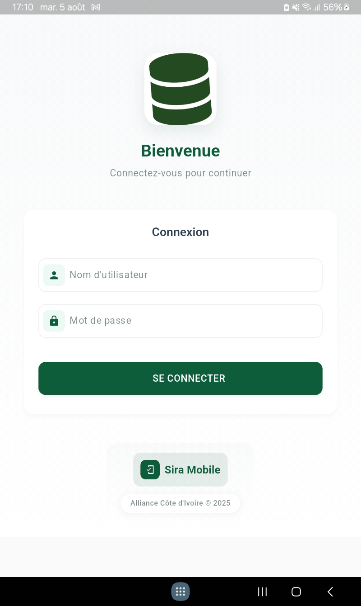
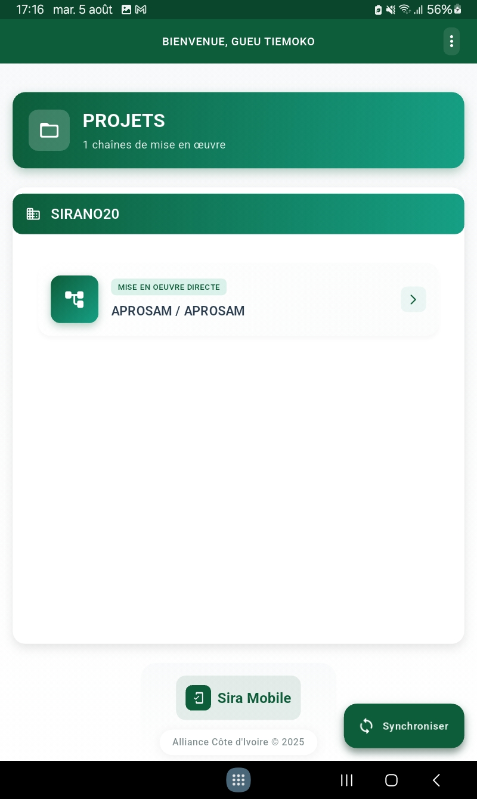
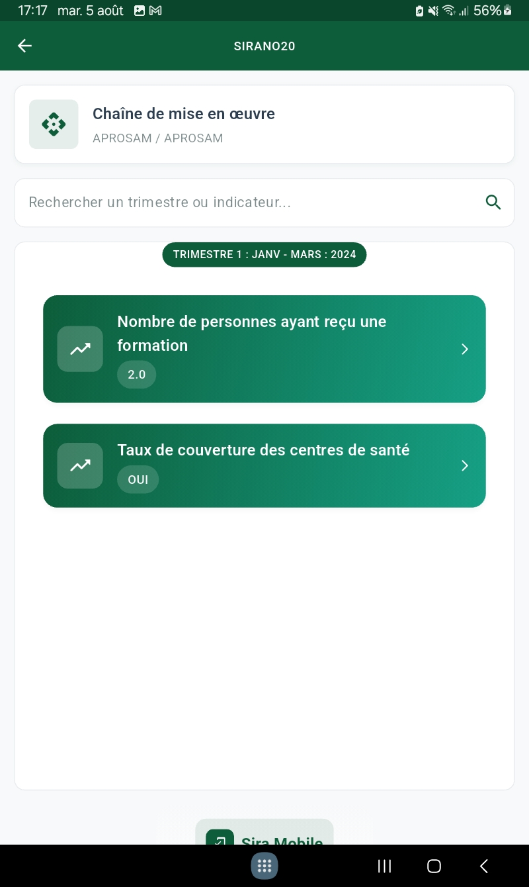
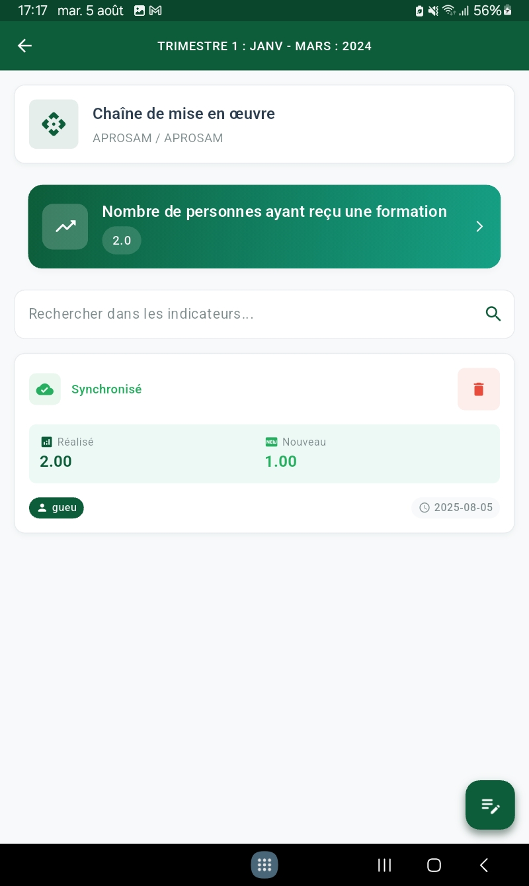
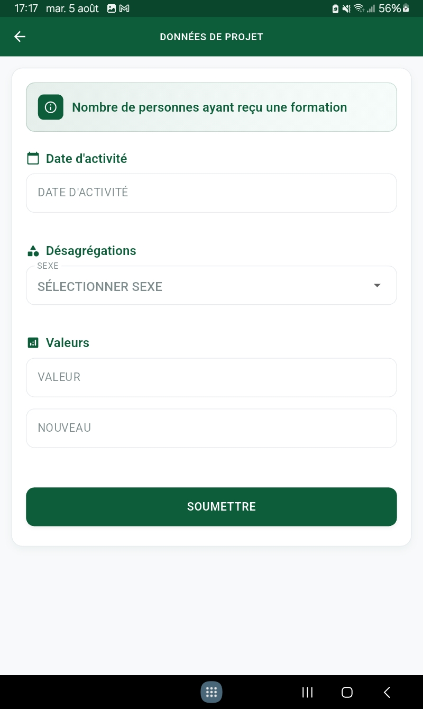
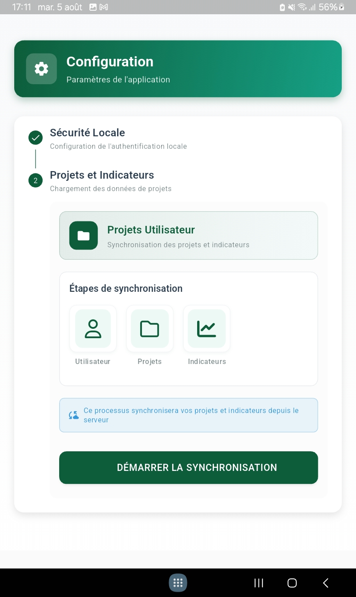
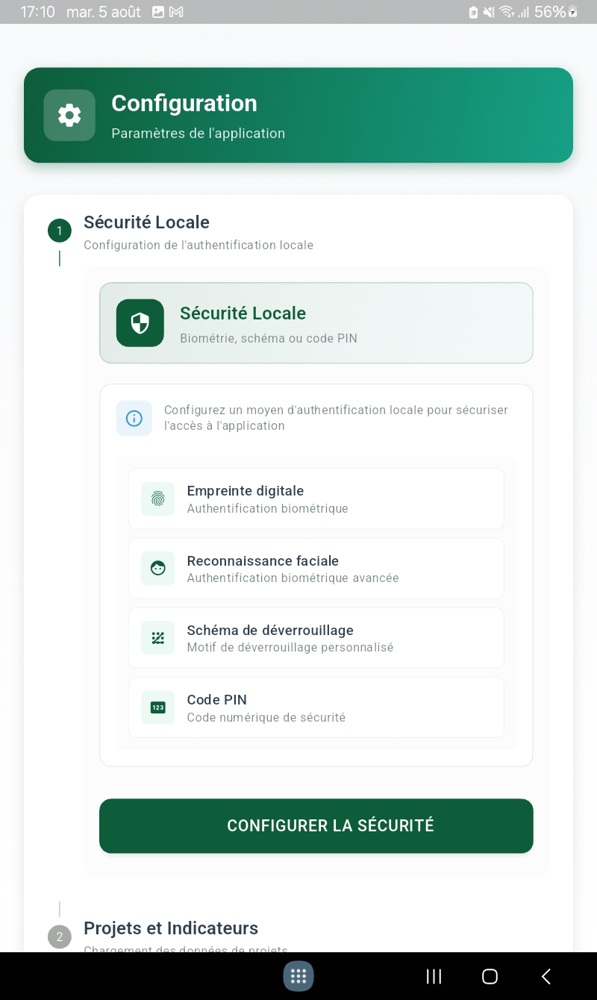
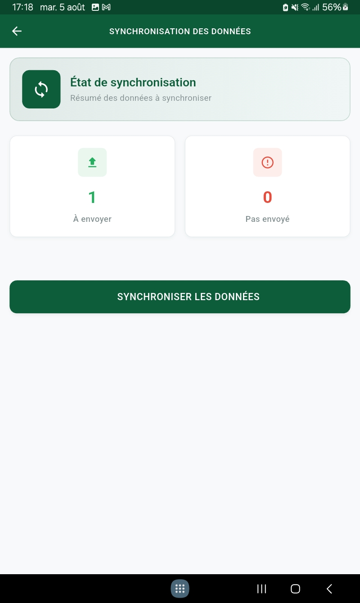

Mission
Refonte de l'application de suivi terrain pour collecte de données structurées hors-ligne / en ligne.
Responsabilités
- Moteur de synchronisation offline-first
- Optimisation taille bundle & performances
- Intégration analytics & crash reporting
Stack
Flutter, SQLite (offline), API REST Django, Docker.
Fonctionnalités clés
- Cache local structuré
- Gestion multi-profils
- Exports CSV/PDF
Galerie








Résultats
Stabilité améliorée (+99% crash free) et gain de productivité terrain.